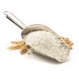
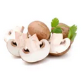

Informations :
- Temps : 1h10min
- Cuisson : 45min
- Difficulté : Très facile
- Prix : Moyen
Ingrédients
8 personnes
- 4 carottes
 2 oignons jaunes
2 oignons jaunes 2 cubes de bouillon de légumes
2 cubes de bouillon de légumes 2 petits pots de crème fraiche
2 petits pots de crème fraiche- 4 cuilleres à soupe de farine
 20g beurre doux
20g beurre doux- 2 kg de blanquette de veau
- 2 petites boites de champignons émincés
 2 cubes de bouillon de poule
2 cubes de bouillon de poule 50cl de vin blanc
50cl de vin blanc 4 jaunes d'oeuf
4 jaunes d'oeuf 2 cuilleres à café de jus de citron
2 cuilleres à café de jus de citron Sel, poivre
Sel, poivre
Préparation :
- Coupez la viande en morceaux de taille moyenne puis placez-la dans votre plat. Faites-la revenir avec le beurre doux jusqu'à ce que les morceaux soient un peu dorés en remuant avec une cuillère en bois.
- Saupoudrez avec la farine. Remuez bien.
- Versez 40 cl d’eau, les cubes de bouillon, le vin. Ajoutez de l'eau si nécessaire pour couvrir.
- Épluchez puis coupez les carottes en rondelles. Émincez l’oignon. Versez le tout dans la cuve. Ajoutez les champignons égouttés.
- Laissez mijoter doucement dans le Cookeo sur le mode « cuisson sous pression » / 45 min. Si la préparation est trop liquide, ajoutez un peu de farine.
- Dans un bol, mélangez bien la crème fraîche, les jaunes d’œufs et le jus de citron. Ajoutez ce mélange en fin de cuisson, puis remuez bien.